OGPO enables sample-efficient full-policy finetuning of generative control policies.Left: a generative control policy (GCP) produces an action through a sequential denoising computation — a denoising MDP at each environment step. Where prior work (Ren et al., 2024) embeds this denoising MDP into the environment to form a bi-level MDP, OGPO severs the connection and instead maximizes an off-policy critic as a terminal reward, via PPO-style optimization over the denoising trajectories.
Middle: on challenging tasks such as Robomimic Transport, OGPO substantially improves sample efficiency over prior GCP-finetuning methods, even under limited hyperparameter tuning.
Right: despite this efficiency, OGPO retains non-trivial variance in its action distribution, and hence its capacity to explore; the remaining variance is squeezed to lie perpendicular to the critic gradient $\nabla_a Q(s,a)$, where it does not conflict with performance.
Abstract
Full-finetuning, kept sample-efficient
Generative control policies (GCPs) — diffusion- and flow-based control policies — have emerged as effective parameterizations for robot learning. This work introduces Off-Policy Generative Policy Optimization (OGPO), a sample-efficient algorithm for finetuning GCPs that maintains off-policy critic networks to maximize data reuse and propagates policy gradients through the full generative process via a modified PPO objective, using the critics as the terminal reward.
OGPO achieves state-of-the-art performance on manipulation tasks spanning multi-task settings, high-precision insertion, and dexterous control. To our knowledge, it is also the only method that can finetune poorly-initialized behavior-cloning policies to near-full task success with no expert data in the online replay buffer, and does so with little task-specific hyperparameter tuning. Through extensive empirical study, we show that OGPO substantially outperforms alternatives based on policy steering and residual corrections, and we identify the mechanisms behind its performance.
1Motivating Question
Can more expressive updates drive more sample-efficient online RL?
A behavior-cloning policy rarely succeeds zero-shot across the range of conditions met at deployment, and the natural remedy, improving it autonomously with reinforcement learning, is bound by the cost of real interaction. Existing methods for finetuning generative control policies sit at two ends of a tradeoff between data efficiency and the extent of policy improvement they permit.
On one end, on-policy policy-gradient methods such as DPPO finetune the entire generative process and improve aggressively, but updates require fresh rollouts, and the effective horizon grows from the task horizon $T$ to $K \times T$ over the $K$ denoising steps. The result is expressive but sample-inefficient.
Off-policy critic learning with a partial update to the generative process. They are performant with well initialized policies, but cannot improve weak policies that require balanced expressivity and sharpening via online interactions.
Steering · DSRL
Steer the initial noise
Freeze the GCP and learn a policy over the initial noise as actions to steer the generation process. Effective only where the base policy already covers good actions.
Cannot generate actions outside the support of the base GCP.
Residual · EXPO
Add a residual correction
Freeze the GCP and learn a small additive correction to the final action. Well suited to a strong base policy needing only minor adjustments.
Can expand the support of the action distribution in a limited manner.
Extraction · QC
Imitate the best action
Train an off-policy critic, then finetune the GCP by SFT on Best-of-N actions ranked by the critic.
SFT cannot learn new behavior. It plateaus and is hyperparameter-sensitive.
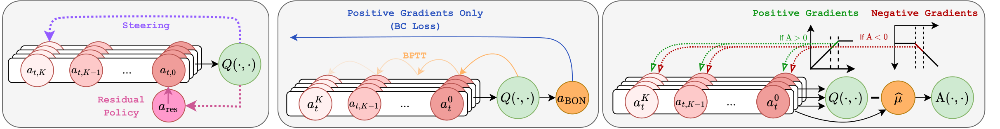
The landscape of GCP finetuning.Left: DSRL steers the initial noise; EXPO adds a residual to the final action. Center: QC distills Best-of-N actions ranked by the critic; backprop-through-time (BPTT) differentiates the critic through the whole denoising chain. Right: OGPO uses an ensemble of critics to form a relative advantage that conditions the action likelihoods across the entire chain.
2 Key Insight
Denoising samples are cheap; environment interactions are costly
OGPO builds on the bi-level view of GCP optimization introduced by Ren et al. (2024). Producing a single action requires running a denoising trajectory $a_{t,K} \to a_{t,K-1} \to \cdots \to a_{t,0}$, which unfolds an inner denoising MDP over generation steps, nested inside the outer environment MDP over executed actions.
The two levels differ sharply in cost. A step in the environment moves a physical robot and is therefore expensive; a step in the denoising process is a single forward pass, and is therefore cheap and trivially parallelizable. OGPO is organized entirely around exploiting this asymmetry.
Severing the bi-level MDP. Within each block the policy denoises an action ($a^K \to \cdots \to a^0$); between blocks, the environment transitions. OGPO cuts the MDP at the end of every denoising trajectory and supplies the off-policy critic $Q(s_0, a_0^0)$ as a terminal reward for the inner denoising MDP.
The key idea
Learn the critic off-policy in the expensive environment MDP, so that every real transition is reused; then extract the policy with on-policy PPO entirely within the cheap denoising MDP, using the critic as a terminal reward. The result is the sample efficiency of temporal-difference learning together with the expressivity of full-policy updates.
Because the denoising trajectories are generated in the policy's own imagination, OGPO avoids the two pathologies of differentiating through a GCP: it never backpropagates through the denoising chain, and it never differentiates the critic, $\nabla_a Q$, which is unreliable in contact-rich tasks. The policy update is zeroth-order throughout.
3 Method
On-policy PPO for off-policy policy extraction
OGPO treats each denoising trajectory as a short sequence to be optimized with PPO, in which the only reward is supplied at the end — the critic's value of the final action. For a state $s_t$ and a sampled trajectory $a_{t,K:0}$, the objective is the standard clipped surrogate, applied to the denoising trajectory alone:
PPO over the denoising trajectory, critic as terminal reward
$$\ell_{\mathrm{PPO}}(\theta;\, s_t, a_{t,K:0}, \hat V)=\min\!\big(\omega_\theta\, \hat A,\ \mathrm{clip}(\omega_\theta,\,1-\epsilon,\,1+\epsilon)\,\hat A\big)$$
$$\omega_\theta=\prod_{k=1}^{K}\frac{\pi_\theta(a_{t,k-1}\mid s_t,a_{t,k})}{\pi_{\bar\theta}(a_{t,k-1}\mid s_t,a_{t,k})},\qquad \hat A=Q_{\mathrm{targ}}(s_t,a_{t,0})-\hat V$$
Because no reward is dispensed at intermediate denoising steps, $\hat A$ is exactly the Monte-Carlo return of the trajectory. The ratio $\omega_\theta$ is an annealed importance ratio over the whole chain, so a single advantage conditions every generation step toward higher-value actions. The procedure rests on three components.
1
Reuse every real transition
An ensemble of $M$ critics is trained off-policy with the standard temporal-difference loss over a long-horizon replay buffer. Targets use the mean over the ensemble; ablations show this is preferable to pessimistic min-aggregation in the sparse-reward setting.
2
Sample denoising trajectories in parallel
By analogy to GRPO in language-model post-training, a buffer state $s_t$ plays the role of a prompt and each denoising trajectory the role of a response. We draw $N_{\mathrm{batch}}$ states and $N_{\mathrm{group}}$ trajectories per state, all in parallel and at no environment cost, and average the loss:
Parallel sampling yields a Monte-Carlo value baseline directly, $\hat V^{(i)} = \tfrac{1}{N_{\mathrm{group}}}\sum_j Q_{\mathrm{targ}}(s^{(i)}, a_0^{(i,j)})$, so OGPO requires no separate value network.
4
Debias the noise for flow policies
Flow ODEs have singular per-step likelihoods, leaving the PPO ratio ill-defined. OGPO injects Gaussian noise at each flow step to make the likelihoods non-singular, and applies a stochastic-interpolant correction so that the per-step marginals continue to match standard ODE sampling (this is important!).
Algorithm — OGPO (abbreviated)for each environment step until done:
execute a_t ~ π̄(·|s_t);
push (s_t, a_t, r_t, s_{t+1}, done) → buffer 𝓑 # critic update — off-policy, sample-efficient
update critics φ₁…φ_M with the TD error over batches from 𝓑 # actor update — on-policy PPO, in the GCP's imagination for i = 1…N_batch:
sample state s⁽ⁱ⁾ ~ 𝓑; roll N_group denoising trajectories a⁽ⁱ,ʲ⁾ ~ π̄(·|s⁽ⁱ⁾)
baseline V̂⁽ⁱ⁾ ← mean_j Q_targ(s⁽ⁱ⁾, a₀⁽ⁱ,ʲ⁾)
update actor with the aggregated PPO loss # no BPTT, no ∇ₐQ
EMA targets: θ̄ ← (1−τ)θ̄ + τθ; φ̄ ← (1−τ)φ̄ + τφ
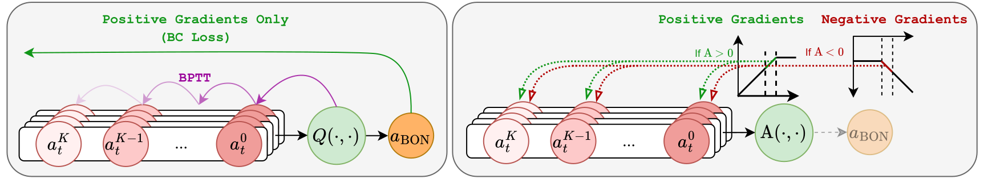
Why zero-order optimization, rather than imitation or backpropagation-through-time (BPTT) over the denoising steps. Best-of-N cloning provides only positive gradients toward a single action. BPTT pushes the critic gradient through the whole chain and tends to explode or vanish. OGPO's zero-order optimization allows full optimization of a terminal advantage, without succumbing to the limits of BPTT.
4 OGPO+ and OGPO+CA
Mitigating Critic Exploitation
Aggressive policy extraction can overly exploit imperfectly learned critics. Moreover, under the sparse, −1-per-step reward typical in robotic manipulation, maximizing return trades completion rate against completion speed, and OGPO may learn to finish quickly at the expense of reliability. We propose two modifications, OGPO+ and OGPO+CA, that address these challenges, ensuring greater training stability and sample efficiency.
OGPO+: Behavior cloning from a success buffer
We maintain a success buffer $\mathcal{D}_{\mathrm{succ}} \subseteq \mathcal{D}_{\mathrm{roll}}$ of transitions from episodes that succeeded, and add a small cloning loss on it. The term is asymmetric: it raises the likelihood of empirically successful actions without lowering that of failures, so it places a floor under the modes that the PPO objective is allowed to abandon.
OGPO+ total loss
$$\mathcal L_{\mathrm{Total}}(\theta)=\mathcal L_{\mathrm{PPO}}(\theta)+\lambda_{\mathrm{BC}}\,\mathcal L_{\mathrm{BC}}(\theta),\qquad \mathcal L_{\mathrm{BC}}(\theta)=\mathbb{E}_{(s,a)\sim\mathcal{D}_{\mathrm{succ}}}\big[\,\ell_{\mathrm{BC}}\big(\bar\pi_\theta(\cdot\mid s),\,a\big)\big]$$
OGPO+CA: Conversative updates under critic uncertainty
As noted above, full-policy finetuning is expressive enough to over-exploit an imperfect critic. This is most visible at the transition from offline pretraining to online RL. There, the critic ensemble has not yet reached agreement on actions outside the offline support, and that disagreement passes directly into the policy gradient — the familiar performance "dip."
Rather than altering the critic update, OGPO modifies the policy-extraction step to act only where the ensemble agrees. For each candidate action it uses a sign-consensus, or conservative, advantage:
The advantage is non-zero only when every ensemble member agrees on its sign, and then takes the most conservative magnitude consistent with that sign. Actions on which the ensemble disagrees contribute no gradient until on-policy data restores consensus, at which point the update recovers automatically.
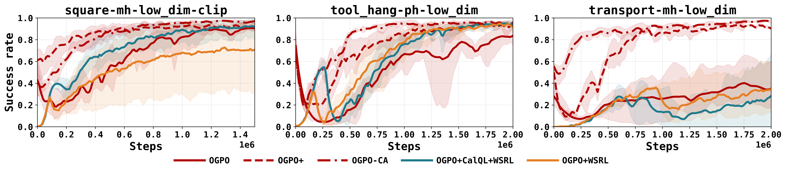
Conservative advantages against warm-starting recipes. Sign-consensus advantages reduce the early offline-to-online dip without slowing late convergence, in a regime where high-update-to-data and pessimistic-critic recipes (Cal-QL, WSRL) fall short.
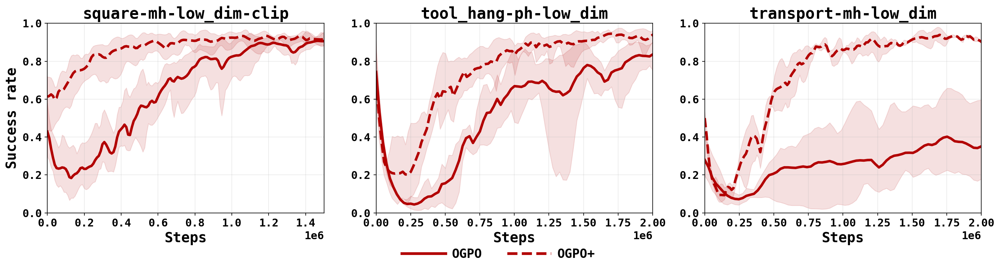
From OGPO to OGPO+. Success rate against environment steps on three Robomimic tasks. Grounding in the success buffer makes OGPO+ converge faster, and to higher and steadier success, than the base method.
Every method begins from the same flow BC checkpoint, clipped to at most 50% success, and finetunes online with no offline or expert data in the replay buffer — the regime that reflects real deployment. We evaluate across three families that span the hard parts of robot learning: multi-task long-horizon control (Franka Kitchen), high-precision insertion (Robomimic), and dexterous manipulation (Adroit).
Roughly 7× the sample efficiency of on-policy DPPO
OGPO+ and DPPO differ in a single respect: OGPO+ severs the bi-level MDP and uses an off-policy critic as a terminal reward, whereas DPPO applies on-policy PPO to the entire bi-level MDP. That one change makes DPPO take on the order of 7× longer to reach the success rate OGPO+ attains, and OGPO+ exceeds DPPO's own reported numbers in both efficiency and final performance on every shared task.
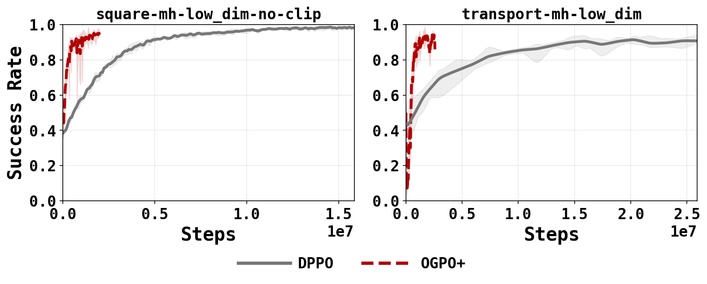
Off-policy against on-policy. Success rate versus environment steps: OGPO+ (off-policy critic with denoising-MDP PPO) against DPPO (fully on-policy). Note the difference in horizontal scale.
Across environments
High-precision insertion Square (medium horizon), Tool Hang (long horizon, multi-step), and Transport (bi-manual). The base policy is weak here, so steering and residual methods stall while full-policy OGPO continues to improve.
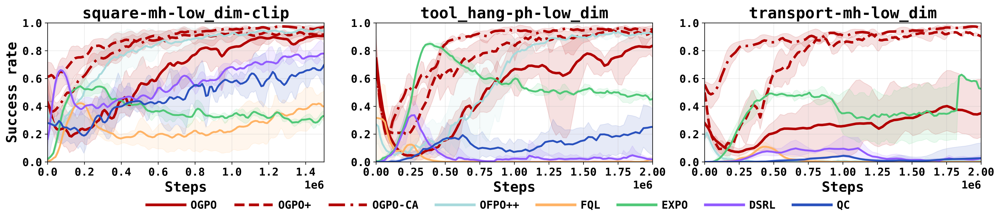
Robomimic. OGPO and OGPO+ converge to high success on all three insertion tasks, including long-horizon Tool Hang and bi-manual Transport, where off-policy baselines plateau or destabilize.
Multi-task, mixed data quality A 9-DoF Franka manipulating four objects, with complete, mixed-order, and partial demonstrations. The weak, partial initialization is exactly where steering and residual methods tend to break down.
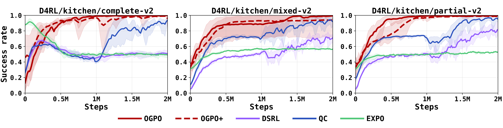
Franka Kitchen. OGPO handles the complete, mixed, and partial regimes, learning multi-step behavior even when the demonstrations are low-quality or truncated.
Where OGPO is matched, not dominant On the 24-DoF Adroit hand, with dense rewards and proficient expert data, small residual corrections suffice, and residual learning (EXPO) is strong. OGPO remains competitive, but its full expressivity is not required in this regime.
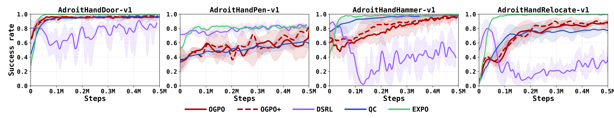
Adroit (Door, Hammer, Pen, Relocate). With dense rewards and strong expert data, residual learning is well matched to the task; OGPO is competitive but does not need its full expressivity here.
The full comparison OGPO and OGPO+ against all off-policy baselines across the benchmark suite.
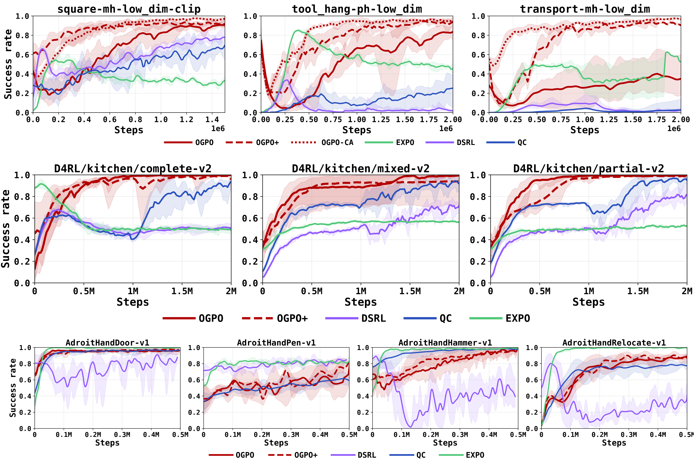
OGPO against all off-policy baselines. Across the suite, OGPO and OGPO+ are the only methods strong on mixed and partial data, high-precision, and long-horizon tasks at once.
A method without a weak regime
Read across the tasks, the pattern is consistent: each partial-finetuning method has a regime in which it fails, while OGPO is strong everywhere except dense, dexterous control, where residual learning is the more natural choice.
Criterion
OGPO
QC
DSRL
EXPO
Mixed data quality
✓✓
✓◔
◔◔
✗✗
High-precision tasks
✓✓
~◔
✗✗
◔◔
Partial demonstrations
✓✓
✓✓
~◔
✗✗
Long horizon
✓✓
◔✗
◔✗
✗✗
Dense / dexterous
~◔
~◔
◔✗
✓✓
High sample efficiency
✓✓
~✗
✗✗
◔✗
✓ solves all tasks, SOTA-competitive~ solves all, below SOTA◔ solves only some✗ fails on all· per cell: left = with task-specific tuning, right = fixed hyperparameters
Rollouts
Behavior at deployment
Rollouts from the clipped BC initialization. OGPO+ completes high-precision insertion reliably, while the partial-finetuning baselines fail in characteristic ways.
OGPO+ (ours) — reliable insertion on Square.
DSRL — steering alone struggles on high-precision insertion.
OGPO+ (ours) — completes the full multi-step Tool Hang.
QC — supervised extraction plateaus at partial success.
DSRL — initial-noise steering cannot reshape later steps.
6 Analysis
Understanding the performance of OGPO
Here, we try to understand why OGPO outperforms other methods. Beyond the routine ablations, we uncover a surprising finding: OGPO drives exploration, rather than merely sharpening the base policy.
Whereas diversity, optimality and task efficiency are often regarded as being at odds, we show that OGPO accomplishes all simultaneously. Below, we present extensive evidence for this finding, and propose a mental model, summarized in the figure caption below as to how OGPO achieves this affect.
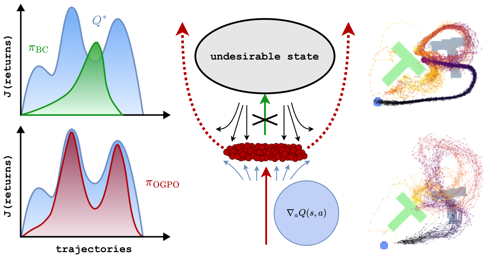
Why critic-seeking expands rather than collapses.Left: over the return landscape of the critic $Q^*$, a behavior-cloned policy $\pi_{\mathrm{BC}}$ concentrates on a single mode, whereas $\pi_{\mathrm{OGPO}}$ spreads mass across the high-return region. Center: the critic gradient $\nabla_a Q(s,a)$ lifts the action distribution toward high-value actions and away from undesirable states. Right: on Push-T, the BC policy traces one narrow solution, while OGPO recovers a diverse set of valid trajectories.
OGPO does not increase variation isotropically: rather, the remaining action-variance as even orthogonal to the critic gradient. Note that, along these directions, differences in actions have zero effect on critic values, to first order. Therefore, we find the OGPO allocates large variance along directions which do not affect task success. At the same time, OGPO (a) sharpens the distribution orthogonal to these directions (resulting in the “thin” ellipsoid seen in Mid/End training), while (b) aggressively “stretching” the action distribution to align with critic gradients in parts of the action distribution when gradients ∇aQ(s, a) exhibit strong consensus, e.g. ψ > 0.6. Thus, OGPO can both optimize the critic for task performance/completion time while simultaneously preserving as much action diversity as possible.
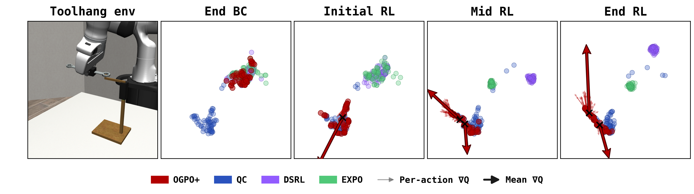
Exploration along the value gradient (Tool Hang). UMAP of action samples at a fixed critical state, from the end of BC pretraining through the initial, middle, and final stages of RL. Every method begins co-located at the BC mode; as training proceeds, OGPO+ (red) migrates along the mean critic gradient (arrow) and broadens, while QC, DSRL, and EXPO remain clustered near the initialization. The breadth OGPO+ keeps lies largely perpendicular to $\nabla_a Q$ — where the critic is insensitive — so exploration persists without costing performance.
PPO against AWR and FPO for extraction
OGPO is modular: with the off-policy critic fixed, the extraction objective can be replaced. Comparing PPO against advantage-weighted regression (AWR, with its asymmetric and positive-only variants) and Flow Policy Optimization (FPO), PPO-style extraction is the most performant across tasks.
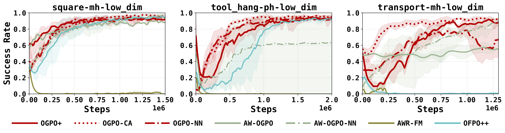
Policy extraction compared. Across extraction objectives — PPO, the AWR family, and FPO — PPO-style extraction is consistently strongest.
Further ablations
1Zeroth-order over backpropagation. BPTT through the denoising steps often fails catastrophically; PPO's zeroth-order updates remain stable.
2Success buffer over best-of-N. On its own, Best-of-N adds oscillation without improving final performance.
3Benefits of negative gradients are task-dependent. Removing the negative-advantage contribution helps on some tasks and harms exploration on others.
4GRPO variance normalization hurts. Adding it markedly degrades performance in this regime.
6Flow and diffusion have comparable performance. The insight transfers: OGPO performs comparably across flow- and diffusion-based GCPs.
Limitations
Limitations of OGPO
OGPO shines on sparse reward tasks in low-data regimes. However, it has the following limitations:
Full finetuning can be unnecessary When the replay buffer already holds abundant expert-quality data, lighter methods such as residual learning can match OGPO at lower compute.
PPO can over-exploit the critic Aggressive extraction can over-fit an imperfect critic, causing training collapse or a tension between success rate and completion speed. The success buffer, and conservative advantages at the offline-to-online transition, seem to remedy this challenge.
Small residual oscillations The success–speed tension produces small oscillations that can keep OGPO from reaching exactly 100% success on some tasks.
Benefits of OGPO are limited on dexterous tasks with dense reward, or with copious expert data On dense-reward Adroit tasks with proficient demonstrations, residual learning is the more natural fit; OGPO is competitive but does not outperform other methods.
Cite
BibTeX
@article{patil2026ogpo,
title = {{OGPO}: Sample Efficient Full-Finetuning of Generative Control Policies},
author = {Patil, Sarvesh and Nakamoto, Mitsuhiko and Agarwal, Manan and
Saxena, Shashwat and Zhang, Jesse and Anantharaman, Giri and
Winston, Cleah and Pan, Chaoyi and Chen, Douglas and Huang, Nai-Chieh and
Temel, Zeynep and Kroemer, Oliver and Levine, Sergey and Gupta, Abhishek and
Dai, Hongkai and Shah, Paarth and Simchowitz, Max},
journal = {arXiv preprint arXiv:2605.03065},
year = {2026}
}